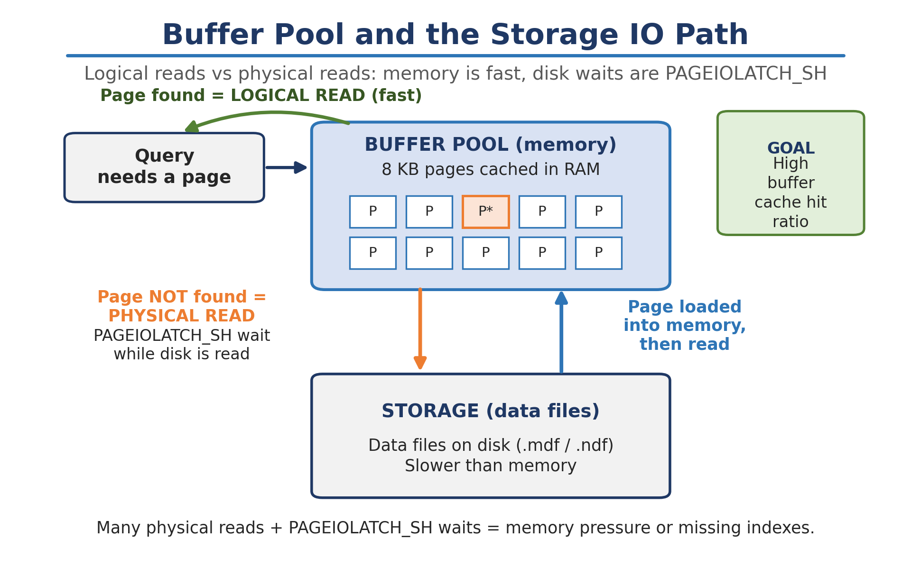

Chapter 13: Wait Stats & Storage IO Troubleshooting
Storage and IO problems often show up as slow queries, but the wait type alone does not tell you whether SQL Server, the query, or the disk is at fault. This chapter builds a repeatable method for reading wait statistics, measuring file latency, and separating query problems from storage problems. It also covers file placement, tempdb, and parallelism waits that are often misread alongside IO waits.
In this chapter:
Key learning: Wait statistics show where time went, not why it went there, so every IO conclusion needs latency data and read counts together. Low latency with huge reads points to the query and its plan, while high latency with modest reads points to storage or throughput. Baselines, file-level metrics, and repeat measurements turn an IO argument into evidence.
Q131. What is the correct methodology for using wait statistics, and why can CXPACKET alone mislead you?
Answer: Wait statistics are cumulative since startup or since the last clear, so a single snapshot is not a diagnosis. Take two snapshots over a matching workload interval, subtract the earlier values from the later values, and rank waits by total wait time in that interval. Filter out benign idle waits, then focus on the top waits that also correlate with slow queries, high CPU, blocking, or IO latency.
A baseline matters because normal for one system is a problem for another. Capture top waits during a healthy period with similar workload, and compare the same interval length, time of day, and workload type. Also check average wait time and waiting task count, not only total time, because a wait with many short waits is different from a wait with a few very long waits.
CXPACKET alone misleads because it is normal in parallel plans. Parallel threads must wait for each other to finish, so a busy parallel workload can show large CXPACKET totals while queries are healthy. Act on parallelism waits only when they track with slow queries, skewed parallel work, or excessive parallelism, and check CXCONSUMER, degree of parallelism settings, and plan shape before changing configuration.
SELECT TOP 10
wait_type,
wait_time_ms,
waiting_tasks_count,
wait_time_ms / NULLIF(waiting_tasks_count, 0) AS avg_wait_ms,
signal_wait_time_ms,
wait_time_ms - signal_wait_time_ms AS resource_wait_ms
FROM sys.dm_os_wait_stats
WHERE wait_type NOT IN (
N'BROKER_EVENTHANDLER', N'BROKER_RECEIVE_WAITFOR',
N'BROKER_TASK_STOP', N'BROKER_TO_FLUSH',
N'CHECKPOINT_QUEUE', N'CLR_AUTO_EVENT',
N'DIRTY_PAGE_POLL', N'DISPATCHER_QUEUE_SEMAPHORE',
N'HADR_FILESTREAM_IOMGR_IOCOMPLETION', N'LAZYWRITER_SLEEP',
N'LOGMGR_QUEUE', N'ONDEMAND_TASK_QUEUE',
N'PARALLEL_REDO_WORKER_WAIT_WORK', N'PREEMPTIVE_OS_GENERICOPS',
N'QDS_PERSIST_TASK_MAIN_LOOP_SLEEP', N'QDS_CLEANUP_STALE_QUERIES_TASK_MAIN_LOOP_SLEEP',
N'REQUEST_FOR_DEADLOCK_SEARCH', N'RESOURCE_QUEUE',
N'SLEEP_TASK', N'SLEEP_SYSTEMTASK',
N'SQLTRACE_BUFFER_FLUSH', N'WAITFOR',
N'XE_DISPATCHER_WAIT', N'XE_TIMER_EVENT'
)
ORDER BY wait_time_ms DESC;Key learning: Wait statistics are useful only against a baseline taken over a matching interval, and a single wait type never proves a root cause on its own.
Q132. What does PAGEIOLATCH_SH mean, and what is the first diagnostic step when it is the top wait?
Answer: PAGEIOLATCH_SH means a session is waiting for a data page to be read from disk into the buffer pool and latched in shared mode for a read. SH stands for shared, and the latch is held while the page is read and made available. High PAGEIOLATCH_SH means SQL Server is doing many physical reads, but it does not by itself prove that storage is slow.
The first diagnostic step is to ask whether the reads are necessary. Check the top queries by physical reads and inspect their execution plans for scans, missing indexes, stale statistics, or large result sets that force disk reads. If a query is reading millions of pages that should have been a small seek, the fix is the query or the index, not the disk.
Then check read latency in sys.dm_io_virtual_file_stats at file level. Low latency with huge reads points to a query problem, because the disk is responding quickly and the workload is simply asking for too much data. High latency with modest reads points to a storage problem, because even a reasonable number of reads is waiting too long for disk.
SELECT TOP 10
qs.total_physical_reads,
qs.execution_count,
qs.total_physical_reads / NULLIF(qs.execution_count, 0) AS avg_physical_reads,
qs.total_logical_reads,
st.text
FROM sys.dm_exec_query_stats AS qs
CROSS APPLY sys.dm_exec_sql_text(qs.sql_handle) AS st
ORDER BY qs.total_physical_reads DESC;
SELECT
DB_NAME(vfs.database_id) AS database_name,
mf.physical_name,
vfs.num_of_reads,
vfs.num_of_bytes_read,
vfs.io_stall_read_ms / NULLIF(vfs.num_of_reads, 0) AS avg_read_stall_ms,
vfs.io_stall_write_ms / NULLIF(vfs.num_of_writes, 0) AS avg_write_stall_ms
FROM sys.dm_io_virtual_file_stats(NULL, NULL) AS vfs
JOIN sys.master_files AS mf
ON mf.database_id = vfs.database_id
AND mf.file_id = vfs.file_id
ORDER BY avg_read_stall_ms DESC;Key learning: The first step is to ask whether the reads are necessary, because low latency with huge reads means a query problem and high latency means a storage problem.

Q133. What is the difference between PAGEIOLATCH_SH, PAGEIOLATCH_EX, and PAGEIOLATCH_UP, and how does a latch differ from a lock?
Answer: All three waits mean a session is waiting for a page that must be read from disk, and the suffix describes the latch mode requested. SH is shared mode for a read, EX is exclusive mode for a change to the page, and UP is update mode where the session intends to change the page but has not yet taken an exclusive latch. PAGEIOLATCH_SH is the most common in reporting and scan-heavy workloads, while EX and UP appear more with writes and page modifications.
A latch is different from a lock in scope and lifetime. A latch protects a physical page in memory for a very short time while it is read, changed, or written, and it is released as soon as the physical operation finishes. A lock protects logical data such as a row, key, page, or table for the duration needed by a transaction, and it supports blocking, deadlock detection, and isolation semantics.
Do not confuse PAGEIOLATCH with PAGELATCH. PAGEIOLATCH includes disk IO to bring the page into memory, while PAGELATCH is contention for a page already in memory, often on allocation pages in tempdb or on hot pages under heavy inserts. The fix for PAGELATCH is usually contention reduction, while the fix for PAGEIOLATCH starts with read necessity and latency.
SELECT
wait_type,
wait_time_ms,
waiting_tasks_count
FROM sys.dm_os_wait_stats
WHERE wait_type IN (N'PAGEIOLATCH_SH', N'PAGEIOLATCH_EX', N'PAGEIOLATCH_UP', N'PAGELATCH_SH', N'PAGELATCH_EX', N'PAGELATCH_UP')
ORDER BY wait_time_ms DESC;Key learning: A latch protects a memory page for a very short time while a lock protects logical data for the length of a transaction.
Q134. What causes WRITELOG waits, and how do you investigate them?
Answer: WRITELOG means a session is waiting for log records to be written to durable storage during a commit or checkpoint. Common causes are slow log disk latency, low log throughput, very frequent commits, large transactions, log file growth, and synchronous mirroring or Availability Group commit waits where the local commit must wait for a remote log harden. It is a log throughput wait, not a data page wait, so data file latency alone does not explain it.
Investigate in order: confirm WRITELOG is a top wait over a timed interval, check log file write latency at file level, and check whether log flushes correlate with slow commits. Check for synchronous replicas, mirroring state, long-running transactions holding the log, and log file growth events. Also check transaction patterns, because many small commits or chatty application loops can saturate even healthy log storage.
Fixes depend on the cause. Separate the log onto fast dedicated storage, size the log to avoid frequent growth, tune commit frequency and batch size, and address replica or network delay if a synchronous secondary is the bottleneck. Do not move the log or change replica mode without evidence, because the wrong change can trade durability for speed.
SELECT
wait_type,
wait_time_ms,
waiting_tasks_count
FROM sys.dm_os_wait_stats
WHERE wait_type = N'WRITELOG';
SELECT
DB_NAME(vfs.database_id) AS database_name,
mf.name AS logical_name,
mf.physical_name,
vfs.num_of_writes,
vfs.io_stall_write_ms / NULLIF(vfs.num_of_writes, 0) AS avg_write_stall_ms
FROM sys.dm_io_virtual_file_stats(NULL, NULL) AS vfs
JOIN sys.master_files AS mf
ON mf.database_id = vfs.database_id
AND mf.file_id = vfs.file_id
WHERE mf.type_desc = N'LOG'
ORDER BY avg_write_stall_ms DESC;Key learning: WRITELOG means the session is waiting for log records to reach durable storage, so check log throughput and disk latency before blaming the query.
Q135. What causes IO_COMPLETION waits, and how do you investigate them?
Answer: IO_COMPLETION means a session is waiting for an IO operation to finish that is not a normal data page read. Common causes are backup and restore, checkpoint, DBCC checks, file growth and shrink, lazy writer activity, and other background IO that must complete before work can continue. It often appears during maintenance windows or alongside large bulk operations rather than during steady query traffic.
Investigate by correlating the wait with running work. Check currently executing requests for backup, restore, DBCC, checkpoint, and bulk commands, and compare the wait timeline with job history and maintenance schedules. Check file-level latency for the affected files, and check whether the wait is concentrated on one database, one file, or one time window.
If the wait tracks with a backup or checkpoint, the fix is usually scheduling, throughput, or backup tuning rather than query tuning. If it appears without an obvious background job, check for file growth events, storage latency spikes, and large scans that spill or force heavy IO. Always confirm with timed samples, because a cumulative total can hide a short maintenance spike.
SELECT
wait_type,
wait_time_ms,
waiting_tasks_count
FROM sys.dm_os_wait_stats
WHERE wait_type = N'IO_COMPLETION';
SELECT
session_id,
command,
status,
wait_type,
wait_time,
total_elapsed_time
FROM sys.dm_exec_requests
WHERE command LIKE N'%BACKUP%'
OR command LIKE N'%RESTORE%'
OR command LIKE N'%DBCC%';Key learning: IO_COMPLETION usually points to a background IO operation such as backup or checkpoint rather than a normal data page read.
Q136. Which disk latency metrics should you check, and how do you read sys.dm_io_virtual_file_stats and PerfMon counters?
Answer: The core metrics are average read stall and average write stall per file, calculated as total stall time divided by number of reads or writes. Also check number of reads and writes, bytes read and written, and total stall time, because latency without volume can mislead. sys.dm_io_virtual_file_stats returns cumulative values since startup, so take two samples over a known interval and calculate the delta to get latency for that period.
PerfMon adds the operating system and storage view. Check Avg Disk sec per Read and Avg Disk sec per Write for latency, Disk Reads per sec and Disk Writes per sec for throughput, and queue length for saturation. Correlate the disk instance with the SQL Server file path, because one slow volume can hide behind healthy averages for other volumes.
Use thresholds as guidance, not as hard rules. For OLTP workloads, sustained read or write latency under 10 ms is generally healthy, 10 to 20 ms deserves attention, and sustained latency above 20 ms deserves investigation, but fast flash storage should be much lower and busy reporting storage can be higher without a fault. The baseline for the same volume under similar load is more reliable than any generic threshold.
SELECT
DB_NAME(vfs.database_id) AS database_name,
mf.physical_name,
vfs.num_of_reads,
vfs.num_of_writes,
vfs.io_stall_read_ms / NULLIF(vfs.num_of_reads, 0) AS avg_read_stall_ms,
vfs.io_stall_write_ms / NULLIF(vfs.num_of_writes, 0) AS avg_write_stall_ms,
vfs.io_stall / NULLIF(vfs.num_of_reads + vfs.num_of_writes, 0) AS avg_total_stall_ms
FROM sys.dm_io_virtual_file_stats(NULL, NULL) AS vfs
JOIN sys.master_files AS mf
ON mf.database_id = vfs.database_id
AND mf.file_id = vfs.file_id
ORDER BY avg_total_stall_ms DESC;Key learning: Average stall per read and per write at file level is the evidence that separates a slow disk from a busy disk.
Q137. How do you tell a storage problem from a query problem?
Answer: Use latency and read counts together, never one alone. Low latency with huge physical and logical reads points to a query problem, because storage is responding quickly and the query is asking for too much data. High latency with modest reads points to a storage problem, because even reasonable work is waiting too long for disk. High latency with huge reads can mean both problems are present, and the query fix usually comes first because it reduces load on storage.
Check the plan and the data access path next. Look for table scans, index scans over large ranges, missing indexes, implicit conversions, stale statistics, and large sorts or hashes that spill. Compare logical reads, physical reads, duration, and CPU for the same query over time, and check whether a plan change or statistics update lines up with the slowdown.
Then confirm at file level. Identify which files and volumes show high stall, whether the problem is read or write, and whether it correlates with wait statistics in the same interval. A storage conclusion needs file latency, volume latency, and wait data for the same time window, while a query conclusion needs the plan, read counts, and a repeatable test showing fewer reads after the fix.
SELECT TOP 5
wait_type,
wait_time_ms,
waiting_tasks_count
FROM sys.dm_os_wait_stats
WHERE wait_type LIKE N'PAGEIOLATCH%'
ORDER BY wait_time_ms DESC;
SELECT TOP 10
qs.total_physical_reads,
qs.total_logical_reads,
qs.execution_count,
st.text
FROM sys.dm_exec_query_stats AS qs
CROSS APPLY sys.dm_exec_sql_text(qs.sql_handle) AS st
ORDER BY qs.total_physical_reads DESC;Key learning: Latency decides whether storage is slow, while read counts decide whether the query is asking for too much data.
Q138. What are the best practices for file placement for data, log, and tempdb files, and what is instant file initialization?
Answer: Place data files, transaction log files, and tempdb files on separate volumes where possible, so that heavy reads, log writes, and tempdb activity do not compete for the same disks. Keep the log on fast, low-latency storage with good write performance, because every commit depends on log writes. Size data and log files up front to expected size, and use fixed-size autogrowth in megabytes rather than percentage growth to avoid many small growth events.
Tempdb deserves its own volume and multiple equally sized data files to reduce allocation contention, with the same autogrowth settings on each file. Keep tempdb files the same size so SQL Server can use proportional fill evenly. Avoid placing tempdb on the same volume as user data or logs on a busy system, and monitor tempdb usage before adding files blindly.
Instant file initialization allows SQL Server to allocate data file space without zeroing the new pages, which makes file creation and growth much faster. It applies to data files only, not to log files, and it requires the Perform Volume Maintenance Tasks permission for the SQL Server service account. There is a small security trade-off because old disk content is not zeroed, so confirm the setting with the security policy for the environment.
SELECT
DB_NAME(database_id) AS database_name,
name AS logical_name,
physical_name,
type_desc
FROM sys.master_files
WHERE database_id IN (DB_ID(N'SalesDB'), DB_ID(N'tempdb'))
ORDER BY database_name, type_desc;
SELECT servicename, instant_file_initialization_enabled
FROM sys.dm_server_services
WHERE servicename LIKE N'SQL Server%';
ALTER DATABASE SalesDB
ADD FILE (
NAME = N'SalesDB_Data2',
FILENAME = N'D:\SQLData\SalesDB_Data2.ndf',
SIZE = 1024MB,
FILEGROWTH = 256MB
) TO FILEGROUP [PRIMARY];Key learning: Separate data, log, and tempdb files onto different paths, size files up front, and enable instant file initialization so growth does not stall work.
Q139. What are virtual log files (VLFs), and how do they affect transaction log performance?
Answer: The transaction log is divided into virtual log files, or VLFs, and each VLF is the unit that gets truncated and reused. When the log grows, SQL Server creates new VLFs sized by the growth amount, so a log that grew in many small steps ends up with hundreds or thousands of tiny VLFs. That is the classic VLF problem: recovery, restores, log backups, and even instance startup all walk the VLF list, so a log with thousands of VLFs is slow at exactly the moments when speed matters most.
Check the VLF count with sys.dm_db_log_info on SQL Server 2016 SP2 and later, or DBCC LOGINFO on older versions. A healthy log has tens of VLFs, not thousands. The fix is to grow the log to its target size in a few large steps, so each step creates a small number of large VLFs, and to set autogrowth to a fixed size in megabytes rather than a percentage. Shrinking and regrowing the log to fix VLFs is a maintenance-window operation, never a routine fix, because shrinking a log that is in use can fail and a wrong size just recreates the problem.
-- Count VLFs and see their sizes
SELECT COUNT(*) AS VLFCount,
SUM(vlf_size_mb) AS TotalLogSizeMB
FROM sys.dm_db_log_info(DB_ID('SalesDB'));
SELECT vlf_begin_offset, vlf_size_mb, vlf_status, vlf_active
FROM sys.dm_db_log_info(DB_ID('SalesDB'))
ORDER BY vlf_begin_offset;
-- Grow in large steps, and set fixed autogrowth instead of a percentage
ALTER DATABASE SalesDB
MODIFY FILE (NAME = N'SalesDB_log', SIZE = 8192MB, FILEGROWTH = 512MB);Key learning: The log is made of virtual log files, and many small autogrowth steps create thousands of tiny VLFs that slow recovery and restores, so grow the log in large steps and use fixed-size autogrowth.
Q140. How do you troubleshoot tempdb IO problems?
Answer: Start by identifying whether the problem is allocation contention, space pressure, version store growth, or file-level IO latency. Check tempdb file space usage for free space, version store, user objects, and internal objects, and check which sessions are allocating the most tempdb pages. High version store use points to long-running transactions under snapshot isolation or heavy trigger and online index activity, while high internal object use points to sorts, hashes, and spills.
Check for PAGELATCH contention on allocation pages, which shows up as waits on pages such as 2:1:1, 2:1:2, and 2:1:3 in tempdb. This is a sign that many sessions are competing to allocate pages at the same time. The usual response is multiple equally sized tempdb data files, consistent autogrowth, and reducing tempdb-heavy patterns where possible, such as unnecessary temp tables, large sorts, and repeated spills.
Then check file-level IO latency for tempdb files and correlate it with wait statistics. If latency is high, check the tempdb volume, separation from other files, and whether autogrowth events line up with slowdowns. Size tempdb up front, monitor growth, and fix the queries that spill or hold long transactions rather than only adding files.
USE tempdb;
SELECT
SUM(unallocated_extent_page_count) * 8 / 1024 AS free_space_mb,
SUM(version_store_reserved_page_count) * 8 / 1024 AS version_store_mb,
SUM(user_object_reserved_page_count) * 8 / 1024 AS user_objects_mb,
SUM(internal_object_reserved_page_count) * 8 / 1024 AS internal_objects_mb
FROM sys.dm_db_file_space_usage;
SELECT TOP 10
session_id,
user_objects_alloc_page_count * 8 / 1024 AS user_alloc_mb,
internal_objects_alloc_page_count * 8 / 1024 AS internal_alloc_mb
FROM sys.dm_db_session_space_usage
ORDER BY user_objects_alloc_page_count + internal_objects_alloc_page_count DESC;
SELECT name, physical_name, size * 8 / 1024 AS size_mb
FROM tempdb.sys.database_files;Key learning: Tempdb problems are usually allocation contention or heavy version store and spill use, so measure file usage and top allocators before adding files.
Q141. Scenario: Queries suddenly slow down and the top wait is PAGEIOLATCH_SH. How do you troubleshoot it?
Answer: First, check whether the reads are necessary by finding the top queries by physical reads and inspecting their plans. Look for a query that suddenly started scanning, a missing or disabled index, a plan change, or a parameter value that now reads far more pages than before. If one or two queries account for most physical reads, the slowdown is likely a query or plan problem even though the wait type sounds like storage.
Next, check read latency at file level over a timed interval. Low latency with huge reads confirms a query problem, so focus on the plan, indexes, statistics, and filters. High latency with modest reads points to storage, so check the affected volume, storage health, and whether other workloads or maintenance jobs are saturating the same disks. Also check buffer pool pressure, because memory pressure can force more physical reads when pages are evicted too quickly.
Then walk the timeline: what changed just before the slowdown, such as a deployment, statistics update, index change, data load, or storage event. Test the fix on the worst query first, measure logical reads, physical reads, and duration before and after, and only escalate to storage with file-level latency, wait data, and query evidence for the same interval.
SELECT TOP 10
qs.total_physical_reads,
qs.execution_count,
qs.total_logical_reads,
st.text
FROM sys.dm_exec_query_stats AS qs
CROSS APPLY sys.dm_exec_sql_text(qs.sql_handle) AS st
ORDER BY qs.total_physical_reads DESC;
SELECT
DB_NAME(vfs.database_id) AS database_name,
mf.physical_name,
vfs.io_stall_read_ms / NULLIF(vfs.num_of_reads, 0) AS avg_read_stall_ms
FROM sys.dm_io_virtual_file_stats(NULL, NULL) AS vfs
JOIN sys.master_files AS mf
ON mf.database_id = vfs.database_id
AND mf.file_id = vfs.file_id
ORDER BY avg_read_stall_ms DESC;Key learning: Start with the queries doing the physical reads, then use read latency to decide whether to fix the plan or escalate to storage.
Q142. Scenario: WRITELOG waits spike after adding a synchronous Availability Group replica. How do you diagnose it?
Answer: First, check Availability Group replica health, log send queue size, redo queue size, and HADR_SYNC_COMMIT waits for the affected database. A synchronous replica makes every commit wait for the log to harden on the secondary, so a slow secondary, slow network, or slow secondary log disk can show up locally as WRITELOG. Confirm synchronization state and health before assuming local storage is at fault.
Next, separate local log latency from replica delay. Check local log file write latency, then check secondary log latency, network latency and throughput between replicas, and whether the send queue is growing. A growing log send queue with healthy local latency points to network or secondary throughput, while high local latency points to local log storage. Also check for large transactions and frequent commits, because synchronous commit magnifies any log throughput problem.
Decide the fix from the evidence. Options include fixing secondary storage or network, tuning transaction size and commit frequency, moving the secondary closer, or reviewing whether synchronous commit is required for that replica. Changing to asynchronous commit trades durability guarantees for speed, so it needs explicit approval and a clear understanding of possible data loss on failover.
SELECT
DB_NAME(database_id) AS database_name,
replica_id,
synchronization_state_desc,
synchronization_health_desc,
log_send_queue_size,
redo_queue_size,
last_commit_time
FROM sys.dm_hadr_database_replica_states
WHERE database_id = DB_ID(N'SalesDB');
SELECT
wait_type,
wait_time_ms,
waiting_tasks_count
FROM sys.dm_os_wait_stats
WHERE wait_type IN (N'WRITELOG', N'HADR_SYNC_COMMIT');Key learning: A new synchronous replica can turn commit waits into network and remote log waits, so check replica health and queues before blaming local disks.
Q143. Scenario: The transaction log is full (error 9002). What do you do?
Answer: First, find out why the log cannot be reused: query log_reuse_wait_desc in sys.databases, because it names the exact blocker. LOG_BACKUP means the log has not been backed up, so take a transaction log backup. ACTIVE_TRANSACTION means a long-running transaction is holding the log, so find it in sys.dm_tran_database_transactions and deal with the session behind it. AVAILABILITY_REPLICA means a secondary has not received the log yet, so check replica lag. REPLICATION means the log reader has not processed the transactions. Each cause has a different fix, so guessing wastes the outage.
Next, check the practical limits: free disk space on the log volume, the log file's maximum size, and its autogrowth setting. If the log must grow, give it room, either by freeing space or by growing the file in a large step. Two answers mark a weak candidate: shrinking the log to fix the error, which only frees space temporarily and recreates the problem, and switching the database to SIMPLE recovery in production, which breaks the log chain and kills point-in-time recovery. After the fix, take a log backup, confirm the log reuse wait clears, and set up an alert on log used percentage so the next one is caught before error 9002.
-- First diagnostic step: what is blocking log reuse?
SELECT name, log_reuse_wait_desc,
log_reuse_wait_time
FROM sys.databases
WHERE name = 'SalesDB';
-- If ACTIVE_TRANSACTION, find the open transaction holding the log
SELECT s.session_id, s.login_name, s.host_name,
t.database_transaction_begin_time,
DATEDIFF(MINUTE, t.database_transaction_begin_time, SYSDATETIME()) AS OpenMinutes
FROM sys.dm_tran_database_transactions AS t
INNER JOIN sys.dm_tran_session_transactions AS st
ON st.transaction_id = t.transaction_id
INNER JOIN sys.dm_exec_sessions AS s
ON s.session_id = st.session_id
WHERE t.database_id = DB_ID('SalesDB');
-- After fixing the cause, back up the log to free it
BACKUP LOG SalesDB TO DISK = 'E:\Backups\SalesDB_Log.trn';Key learning: Error 9002 starts with log_reuse_wait_desc, which names the blocker; fix that cause, never shrink the log or switch to SIMPLE recovery as the answer.
Q144. What do CXPACKET and CXCONSUMER waits mean, and when should you act on them?
Answer: CXPACKET means parallel threads are waiting for each other to finish a parallel operation. In a parallel plan, work is split across threads, and fast threads wait for slow threads before the next step can complete. Some CXPACKET is normal and expected whenever parallelism is used, so a large total alone does not prove a problem.
CXCONSUMER was separated from CXPACKET in later versions to identify consumer threads waiting for producer threads in parallel plans. It is generally benign and reflects normal parallel coordination, while true parallelism problems show up with skewed work distribution, excessive parallelism, or one thread doing far more work than the others. Check both waits together with query duration and plan shape, not in isolation.
Act only when parallelism waits correlate with slow queries. Check max degree of parallelism and cost threshold for parallelism, look for parallel scans caused by missing indexes or stale statistics, and check for skewed data distribution across threads. Fix the plan or the data distribution first, and tune parallelism settings carefully with testing, because lowering parallelism too far can slow down large reporting queries that benefit from it.
SELECT
wait_type,
wait_time_ms,
waiting_tasks_count,
wait_time_ms / NULLIF(waiting_tasks_count, 0) AS avg_wait_ms
FROM sys.dm_os_wait_stats
WHERE wait_type IN (N'CXPACKET', N'CXCONSUMER')
ORDER BY wait_time_ms DESC;
SELECT
name,
value_in_use,
description
FROM sys.configurations
WHERE name IN (N'max degree of parallelism', N'cost threshold for parallelism');Key learning: CXPACKET is normal in parallel plans, so act only when parallelism waits track with slow queries and skewed or excessive parallel work.
QueryLab — Self-Hosted SQL Performance Workbench
EXPLAIN visualizer · Index advisor · Slow query dashboard · SQL Server